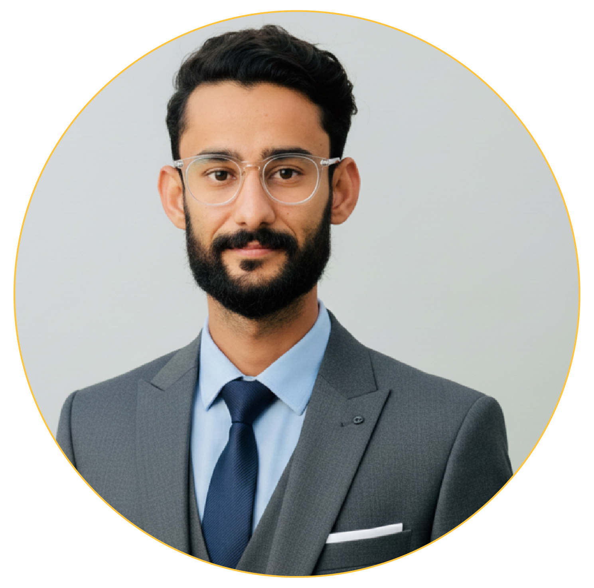

Hi I am
BAKHSHULLAH WAHID
Full Stack Developer
Interested in implementing and managing network systems and supporting the technical operations of an organization.
Seeking opportunities to apply my technical skills in a professional environment and contribute effectively to organizational success

at Bali Telecommunications (Private) Limited, working with advanced switches and routers
handling them with the MikroTik Software. look after customers network issues and troubleshoot them.

ABOUT ME
I am a dedicated and passionate Full Stack Developer with extensive experience in both frontend and backend development. My technical expertise spans Python, C++, Dart, Java, HTML, CSS, and JavaScript, allowing me to design and develop dynamic web applications, cross-platform mobile apps with Flutter, and robust backend systems. I have a strong understanding of algorithms, data structures, and software architecture, which enables me to write efficient, scalable, and maintainable code. I enjoy creating responsive, user-friendly interfaces while ensuring the performance and security of the applications I develop. My approach combines creativity with analytical problem-solving, delivering solutions that are both visually appealing and technically robust. I am constantly exploring new technologies and frameworks to stay updated with industry trends and best practices. I thrive in collaborative environments, working seamlessly with teams to deliver high-quality software solutions. From developing intuitive user experiences to optimizing backend operations, I focus on the complete software lifecycle. I am committed to continuous learning, professional growth, and innovation, striving to turn ideas into impactful digital products. My goal is to contribute meaningfully to projects that challenge my skills while providing exceptional value through cutting-edge technology and thoughtful design.